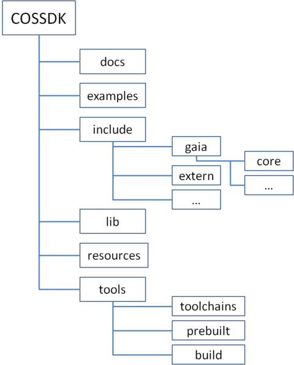
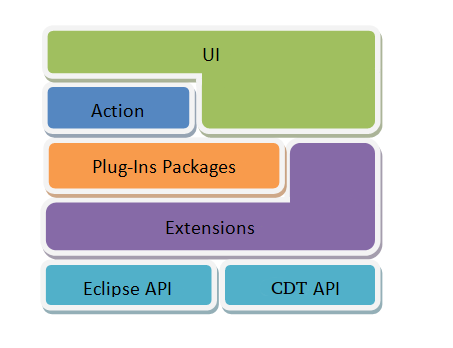

The Architecture of COS SDK and COS IDE

Documents here are mainly generated by doxgen tool, and it will be inlucde in final SDK.
It contains all example for app dev to usderstand the use of our API
It contains all the head files which are needed by app dev to write gaia app on SDK.
It contains all shared lib need by app dev to link against
Some common system resource used directly by app
A collection of arm-eabi related tools, which used to compile, link target app for arm platform.
Tools are used on host machine to help build final
It contains lots of make file scripts, which used to make app easy for dev. More details, please see How to build app from COS SDK.
